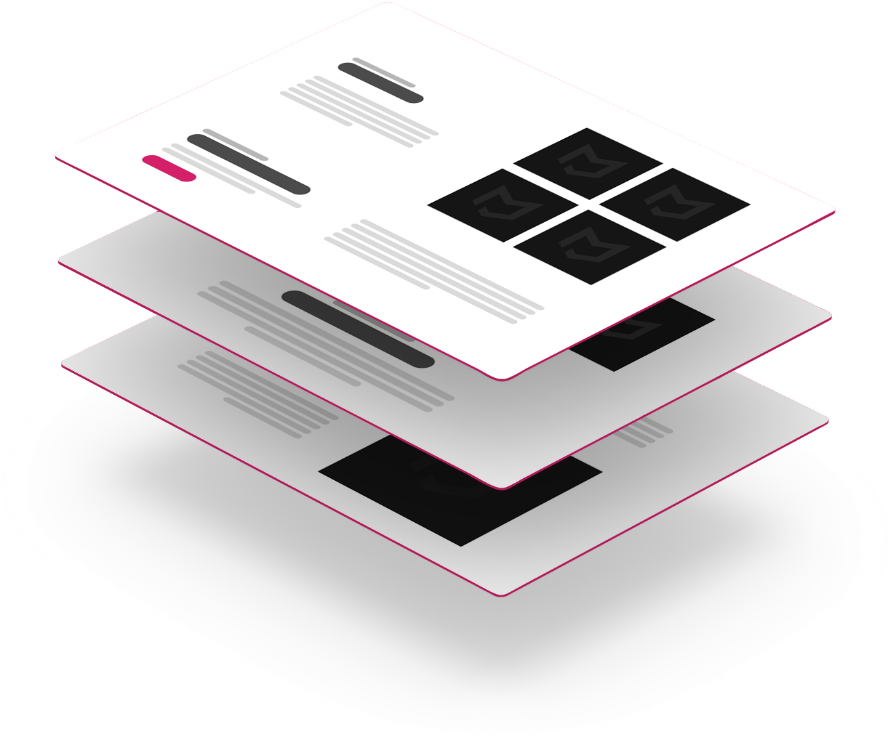
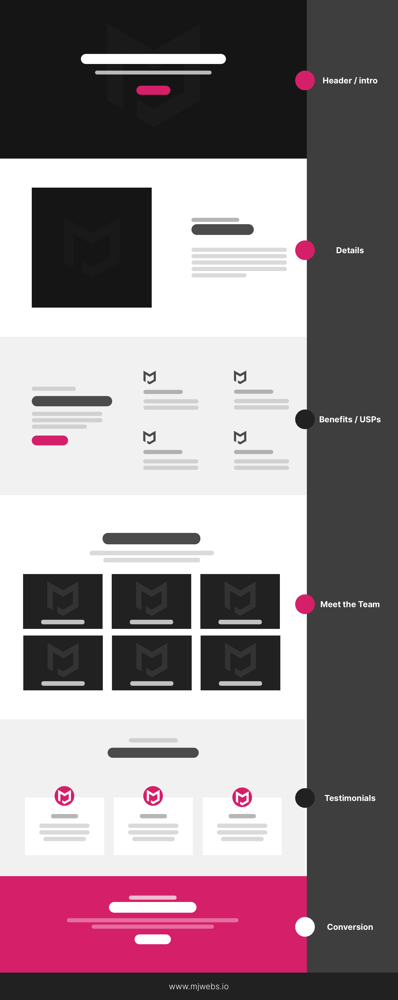
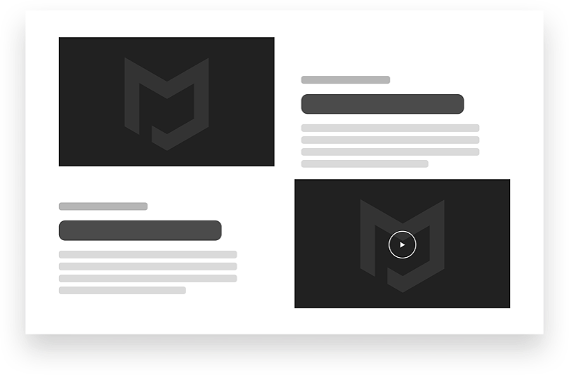
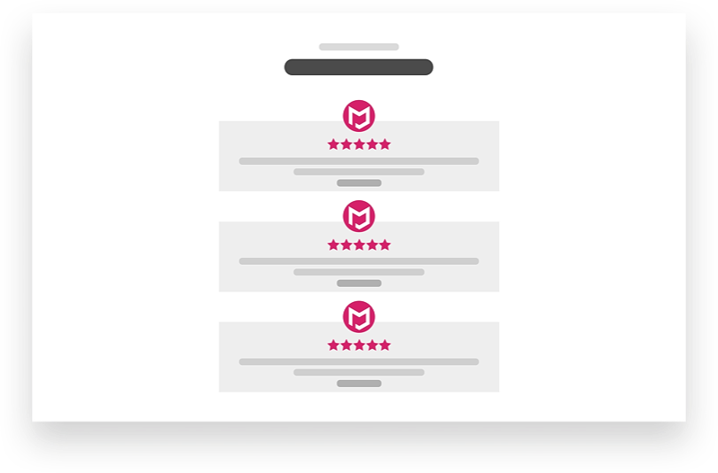
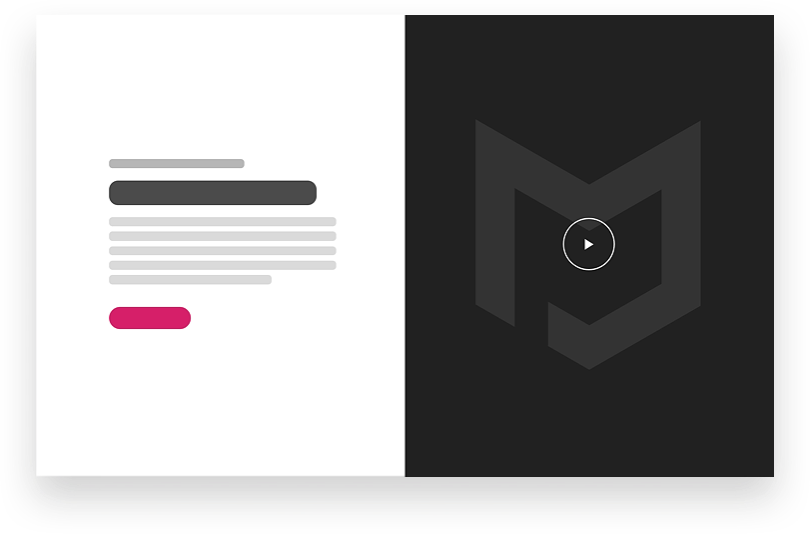
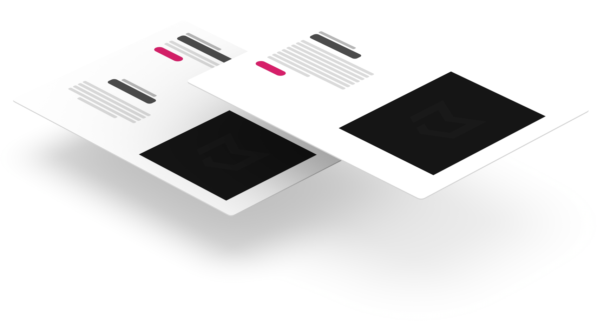

In business, websites and life, your first impression is important. People can be unforgiving, so the first impression is also the last most of the time. For example, if your business website does not make a positive impact on your audience right off the bat-- you only ever have a slim chance of redemption in their eyes. This fact is the reason why your home page should hook them right on the spot and why you should optimise your website to be effective.
Aside from an enticing home page, there is another page that will help you establish your brand and identity with your visitors-- the About page.
What is an About Page?
As the name suggests, an About Page is a page that contains information about you or your company. It helps businesses and professionals build their branding while building a connection with their visitors and target audiences. You also need an About Page if you want to position your personal or business website as one of the authorities in your industry. As mentioned previously, it helps your audience get to know you, your business and what you are capable of doing.
Why You Should Have an About Page in your Web Design
Here are some reasons why you should have an About Page on your website:
It helps boost your brand image.
Your About Page allows you to tell your story, the people you are working with and even present the trusted brands that work with you! All these elements encourage your visitors to trust you and believe in your brand.
It helps you gain organic traffic.
SEO efforts and paid advertisements can help you gain a significant amount of traffic, however, you can gain FREE organic traffic by simply having an effective About Page. So it does not hurt to invest in a page that gives you freebies- right?
It helps shine the limelight on your company.
As mentioned previously, an About Page allows you to tell your story, but aside from that it also allows you to give a summary of your products and services.
Website Design Pro Tip: Even if you already have a summary of your products and services on your home page or about page, you should still have a separate Product or Service Page to further elaborate your offers.
It is an opportunity to gain leads.
The About Page gives way for you to lead your target audience to your opt-in form. Since the information on how amazing your company is and how it can help them is still fresh in their mind-- chances are high that they are hyped enough to sign up for updates.
Key Parts of an Effective About Page Website Design
Your About Page should create a strong impact on your leads and potential clients. It should focus on your story and your unique selling points or USP. Here are some key elements that your About Page should have:
Headline
A headline is a line that expresses a thought that is meant to get a person's interest and hook them enough to encourage them to read the following texts. Your About Page is not the only page that needs a headline-- it is recommended that you have one for throughout your whole website.
Benefit Section
Telling your story is important, but keep in mind that people want to know what they will gain from choosing you instead of your competitors. Your About Page should let them know how you can help them. Using relatable scenarios in this section will help you connect with your audience better.
Visual Support
People are generally visual beings. Sure, some people are imaginative enough to make scenes from a book come to life in their mind theatre, but unfortunately, books and About Pages are apples and oranges in most cases. If you don't have a novel (literally) as your About Page content, help your visitors visualise your company and your services better with the help of some images.
Compelling Content
Your website design and content should help you build a connection with your visitors and potential clients. So you should be mindful of how you tell your story. You should use words that will evoke emotions within the readers. Using a conversational tone is also a good idea in this case. Avoid praising yourself too much as it can backfire when done excessively.
CTA (Call to Action)
CTAs will guide your visitors to where you want them to go. They are important elements especially for your home pages, landing page and About Page. CTAs can come in many shapes and forms. Buttons and opt-in forms are the most common ones, but whichever you choose, keep in mind that they should offer value to your visitors.
Brand Colour Palette and Font
Your website design colours and font will depend on your branding decisions. If you don't have a logo and other branding elements yet-- then you should work on that first. Your colour palette and fonts should represent your company accurately to ensure that you get the right message across. You should also use these elements effectively.
Easy Navigation
This is not just something for your About Page, this should be applied on all pages. For your website design to be effective, your visitors should be able to browse through it easily. Getting from one page to another should not be rocket science. If they need to decipher a code, defeat Godzilla, discover the meaning of life and play hide-and-seek with your pages-- then you are doing it wrong.
How to Create a Credible About Page Website Design
Your About Page is a valuable tool for leads generation if you know how to use it right. Your About Page will help you introduce your business and background to your visitors and if you tell your story correctly. As mentioned previously, it is not just about excessively praising yourself. If you overdo glorifying yourself, it will harm your chances of charming your readers. Instead of winning their trust and approval, you will either come off as arrogant or as an overseller. Keep in mind that overselling can lead to disappointing your client.
So how do you make your About Page look credible and trustworthy without appearing overconfident? Since the about page is all about charming and connecting with your clients, here are some ways to make your About Page website design reflect just how trustworthy you are without overselling yourself:
Add a Testimonial Section on your page.
As mentioned previously, sharing scenarios that your visitors can relate to can help them connect with your brand better. It will help them see how working with you is the right decision. If you tell the story yourself in a big block of text, it will not be as convincing as testimonials coming from your previous clients.
Keep in mind that false testimonials are not only frowned upon, it is also prohibited under the Australian Consumer Law. Use real and genuine testimonials on your page. Keep your reputation clean and prove your integrity as a business.
Offer freebies or other valuable materials.
Let's be honest, everyone loves freebies. Search your feelings and you know it to be true. So why not give something away for your website visitors? Your freebie does not have to be anything too fancy, but make sure it is a valuable material. For example, it can be a starter kit of some sorts that your potential client can use for their own business. It can be a PDF file containing some tips or a valuable resource. Make them feel special.
Add videos on your web design.
Videos are very useful content, you can repurpose it multiple times. You can convert it into a slideshow, an infographic, a blog, etc. It also eliminates doubt since creating a credible video takes a considerable amount of knowledge, research and expertise. Another benefit of a video is that it is a form of visual support, it will help your target audience understand your business, products and services better.
Optimise your About Page for learning.
Offering value to your potential clients is important. Showing them that you care is important. Making sure that they make informed decisions is important. Your visitors, readers, and potential clients visit your website to learn about you, your business and what you do. Make sure that your content and design will not only focus on you but also shed some light for your visitors.
Generally, your website design should focus on how to help your visitors absorb information better and even more so on your About Page. You can try out different layouts that will help emphasize important points in your About Page content.
How to Make an Effective About Page Layout
Now that you know the important elements, sections and qualities-- let's talk about layouts. The way you place your elements matter as much as the sections themselves. Even if you use high-quality graphics and images along with useful content, an unflattering layout can ruin the experience for your readers.
Here are some quick layout tips for an effective layout to go with your high-quality content:
- It doesn't matter if you use aligned or zigzag layouts as long as your images support your text.
- Pay attention to the first images you use as these will set the tone for the page.
- Do not use unreasonably complex images. Too much information will overwhelm your visitors.
- Information-rich content should be placed on the left side of the first row as most people fixate on the left side of the page.
Layouts are more complicated than it looks, even the simplest looking page took a lot of thought and consideration. If you are a beginner website designer or if you are a business owner and you’re planning to DIY your website, coming up with a layout from scratch can be difficult. Check out our library of layouts for About Pages for some inspiration and ideas!
Conclusion
Business is not only about making profits and boosting sales, it is about building a connection with both your existing and potential clients. Since existing clients stay with you because they know that you care about their satisfaction, now, you need to send the same message to potential partners through your About Page.
If you need some assistance with creating an effective website design, MJWebs will gladly help you out.
Series
Website Design Anatomy
In-depth documents about common website components and how to leverage them.
Website Design Anatomy: Designing a Services Page Website Design Anatomy: Designing a Pricing Page Website Design Anatomy: Designing a Products Page Website Design Anatomy: Designing a Header Website Design Anatomy: Designing a Booking Page Website Design Anatomy: Designing an About Page